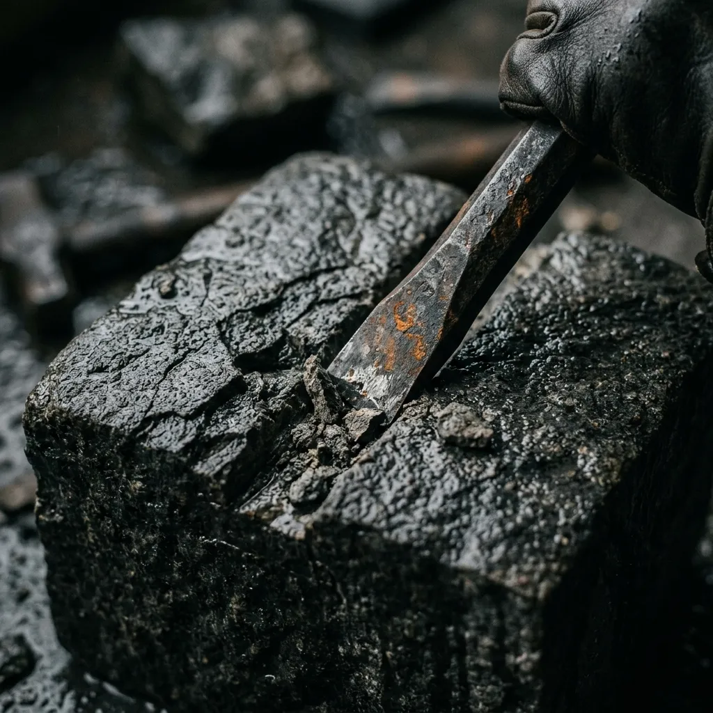
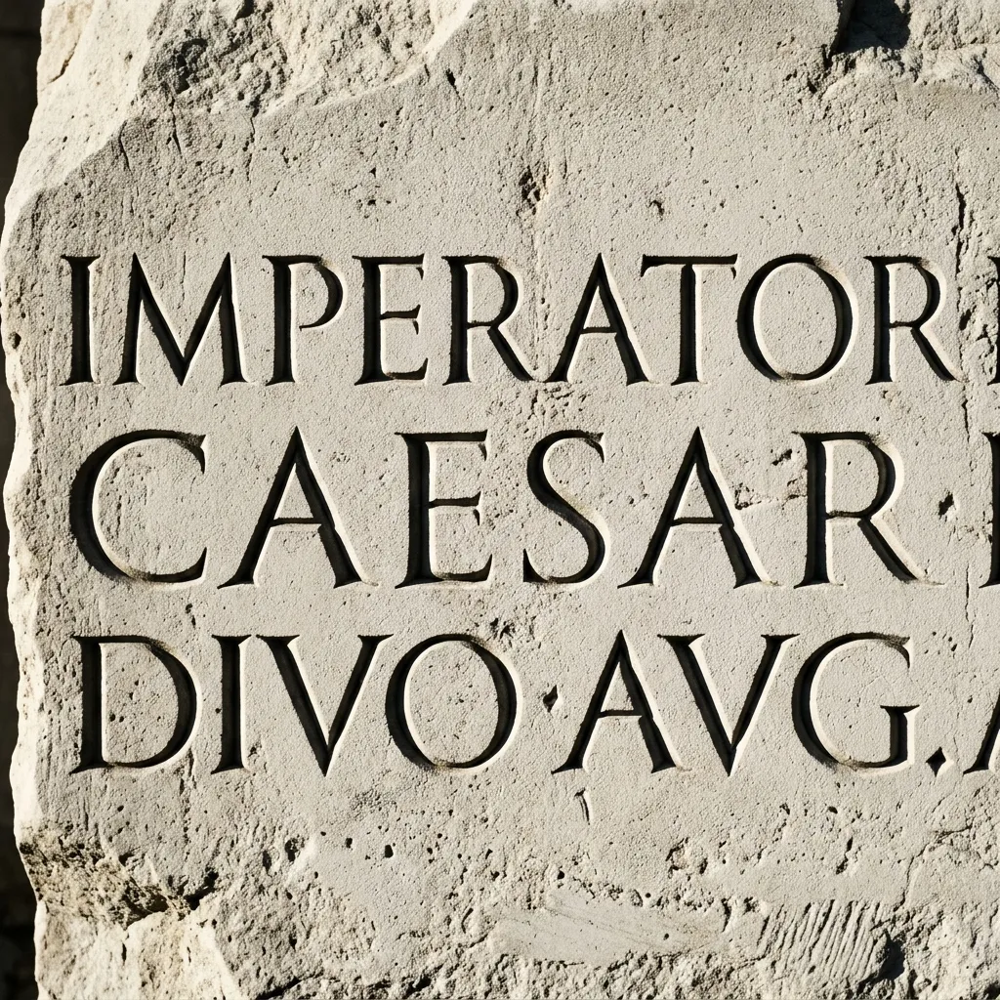
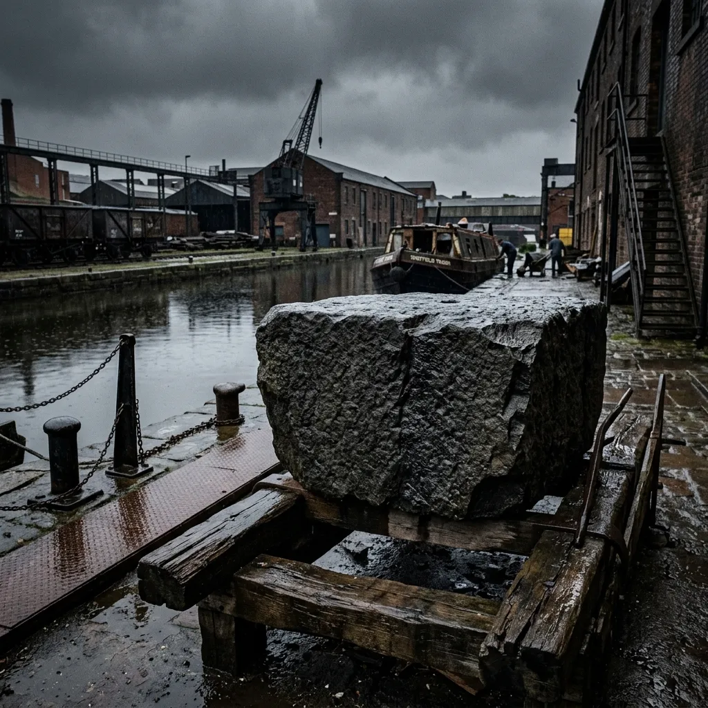
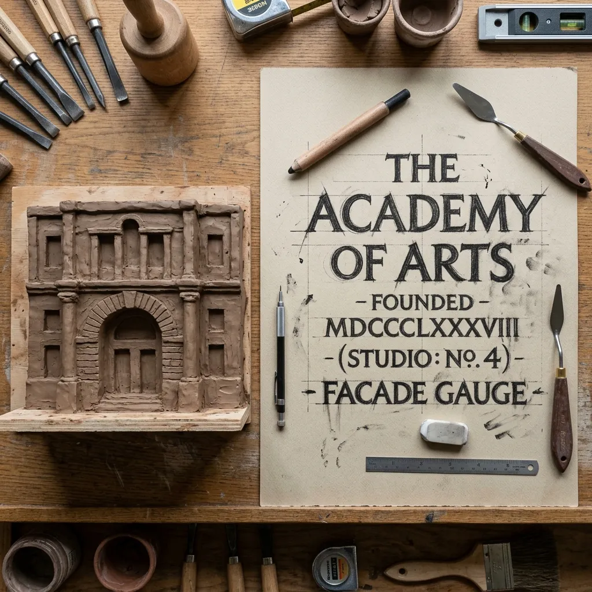

Carving British Stone with Absolute Hand Precision.
The Slate & Chisel restores structural history and sculpts monumental commissions from the ground up. Operating from our waterborne masonry workshop in Sheffield, we refuse the vibration of modern pneumatic machinery. We believe that stone is a living archive, and carving it demands a deliberate physical conversation. Using only forged carbon-steel chisels and hand-turned mallets, we carve Millstone Grit, Portland Limestone, and Westmorland Green Slate into load-bearing architectural components and clean, hand-lettered memorials designed to endure the shifting British climate for centuries.
Initiate Commission Query

The Direct Impact of Steel on Stone
Modern stonecarving has largely surrendered to the speed of diamond-tipped routers and pneumatic hammers. While efficient, these mechanical vibrations shatter the internal crystalline structure of the stone, causing micro-fissures that absorb rainwater, freeze, and eventually flake away within a few decades.
At our workshop, we carve using the traditional Roman Deep-V incision. This method requires the carver to drive a flat chisel at a precise forty-five-degree angle from both sides of the letter line, meeting cleanly at the root. By striking the stone with a hand-swung mallet, we compress and burnish the mineral grains rather than shattering them. The resulting deep shadow caught by the hand-cut V-groove remains sharp and perfectly legible even in the low-angled, wet light of a northern winter. This slow, physical discipline ensures that every character we incise maintains its crisp geometric definition and structural resilience for generations to come.
Sourced from the Bedrock of the Pennines
Our stone is selected directly from the quarry face, bypassing commercial stone yards to evaluate the material in its geological context. We source our Millstone Grit from the ancient gritstone beds of South Yorkshire, selecting dense, heavy blocks that offer superior resistance to windward erosion and structural loads. For fine-lettered panels and delicate decorative mouldings, we travel to Cumbria to secure Westmorland Green Slate, a volcanic ash stone formed over four hundred million years ago, prized for its characteristic olive hue and exceptional splitting properties.
Each block is transported to our canal-side mooring, where we slice it to size using a manually operated hand-cranked framing saw. By working with the stone's natural bedding planes rather than forcing cuts against the grain, we preserve its natural strength, ensuring that every hearthstone, lintel, and structural bracket we produce carries the full integrity of its geological origin.

The Charcoal Cartoon
Before a single chisel strikes stone, we draft a one-to-one scale cartoon on heavy cartridge paper using willow charcoal. This allows architects and patrons to review the geometric proportions, kerning, and layout of the inscription precisely as it will appear in situ.
The Clay Maquette
To test the play of light and shadow-depths, we sculpt a three-dimensional clay model of critical decorative elements. This phase is crucial for anticipating how the final carving will respond to the shifting northern sunlight in its final location.
The Mallet & Chisel
Only when the blueprints are perfected do we begin the physical execution in stone. Using a one-pound hand-turned malacca mallet and tempered steel chisels, we meticulously incise the design, ensuring a faultless translation of the maquette. Skipping steps is counterproductive, leading to irreversible errors.

Restoration Credentials
When working with the fabric of history, absolute rigorous compliance is mandatory. The Slate & Chisel is fully qualified and historically compliant for architectural conservation work, providing reassurance to architects, building managers, and municipal planners across the United Kingdom.
We operate strictly in accordance with British Standard 8221, ensuring the safest, most sympathetic cleaning and surface repair of natural stone. Our structural load-bearing lintels, arches, and fireplace surrounds undergo rigorous safety testing and structural certification, guaranteeing they meet all contemporary building regulations while maintaining authentic heritage aesthetics.
Furthermore, we are proud, active members of the Master Carvers' Association. We frequently collaborate with local conservation officers to ensure our work is fully compliant with the stringent requirements of Grade I and Grade II listed buildings, ensuring every restoration respects the original stonemason's intent.
Download Compliance PackThe Quarry Desk
We welcome complex specifications and monumental architectural challenges. The Slate & Chisel intake process for stone commissions is direct, highly professional, and strictly analogue. We do not offer instant, machine-cut quotes; true craft defies automation. Every piece is priced transparently following a meticulous, manual assessment of the exact carving hours required.
To initiate a project inquiry, patrons and architects are asked to provide detailed structural dimensions, preferred quarry material, and the intended site location. We can also arrange detailed site surveys for major structural restorations.
Our waterborne workshop is moored at Victoria Quays, Sheffield, South Yorkshire. While our barge is a working industrial environment, we welcome site visits by appointment to view the charcoal cartoons and material samples in person. Let us begin the conversation about your next monumental commission.
Initiate Commission Query